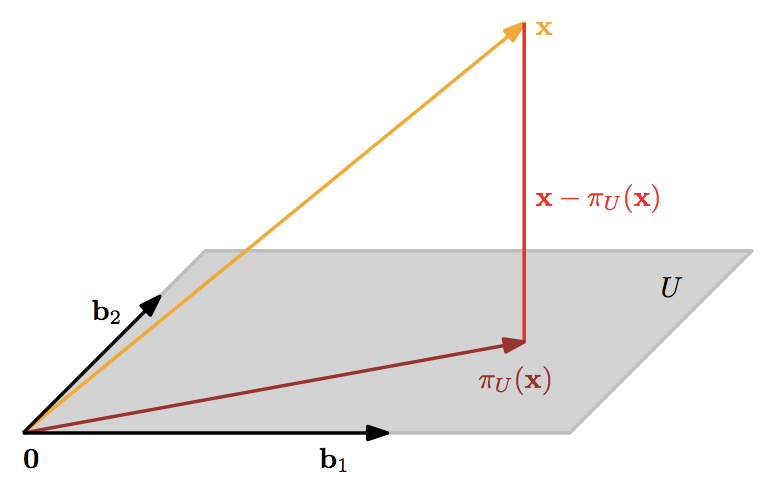

简介
In this module, we will look at orthogonal projections of vectors, which live in a high-dimensional vector space, onto lower-dimensional subspaces. This will play an important role in the next module when we derive PCA. We will start off with a geometric motivation of what an orthogonal projection is and work our way through the corresponding derivation. We will end up with a single equation that allows us to project any vector onto a lower-dimensional subspace. However, we will also understand how this equation came about. As in the other modules, we will have both pen-and-paper practice and a small programming example with a jupyter notebook.
学习目标
- 基于不同的 Inner Product 计算正交投影
- 深刻理解正交投影是分解！
- Relate projections to the reconstruction error and compute it
- 写代码将 image data 投影到 a 2-dimensional 子空间（高维$\rightarrow $ 低维）
High dimension data 经常难以分析、可视化，并且有时数据的关键信息只隐含在其中几个维度中，其他大多数维度并没有蕴含有价值的信息。我们压缩数据的时候，会损失一些信息，理想的状况是：我们保留了那些含有关键信息的维度，而把大量无关的维度去除掉，从而在信息损失度较小的情况下压缩数据，以便用来分析、可视化。
一个核心的 dimensionality reduction 的方法是 PCA， 其中起关键作用的操作就是：向量的正交投影， i.e. Orthogonal Projection.
- 正交投影（orthogonal projection） 也是矩阵正交化的基础，也即：Gram-Schimt过程的基础。
- 我们平时所讲的“投影”，不加说明的情况下通常就是指正交投影。
Projection onto 1-D subspaces
 |
|---|
| Figure 1: 2-D vector projection onto 1-D subspace |
先对上图中一些基本概念做一说明：
$ \mathbf x \text{ is a vector that } \in \mathbb R ^2$
$ \mathbf U \text{ is a 1-D subspace in } \mathbb R^2$
$\mathbf b \text{ is the basis vector of subpace } \mathbf U \text{ and that we want to project x onto.}$
So, every vector in U can be represented as linear combination of $\boldsymbol b$ , i.e. $\beta \boldsymbol b$
$\mathbf u \text{ is any vector in U, i.e. } \mathbf u = \beta \mathbf b $
$\color{purple}{\text{The pruple line }} \text{is the difference vector of } \mathbf x \text{ and the vectors on } \mathbf U $
$\color{purple}{\text{difference vector is : }} diff=\mathbf x - \mathbf u$.
从图中我们发现：
向量 $\mathbf x$ 在 $\mathbf U$上的正交投影是$\mathbf U$ 中所有向量中与 $\mathbf x$ 距离最近的向量。
此时，$\mathbf x$ 与 其在 $\mathbf U$ 上的正交投影之差- $diff$ 与 $\mathbf U$ 垂直，$diff$ 的长度最小。
我们将 $\mathbf x$ 在 $\mathbf U$ 上的 orthogonal projection 记为: $\pi_{\mathbf U}(\mathbf x)$.
关于$\pi_{\mathbf U}(\mathbf x)$ 有如下2个等式成立:
$\pi_{\mathbf U}(\mathbf x) \in \mathbf U \Rightarrow \exists \lambda \in \mathbb R:\pi_{\mathbf U} (\mathbf x) = \lambda \mathbf b (\text{ as }\pi_{\mathbf U}\mathbf x \in \mathbf U)$
$\lambda$ is coordinate of orthogonal projection of $\mathbf x$ onto $\mathbf U$ with respect to basis vector $\mathbf b$.
$\langle \mathbf b, \color{purple}{\mathbf x - \pi_{\mathbf U}\mathbf x \rangle} = 0 (\text{ orthogonality})$
我们可以借此，不过度依赖几何概念、完全从线性代数的视角，只用Inner product的概念就可以求出向量 $\mathbf x$ 在 $\mathbf U$ 中的正交投影$\pi_{\mathbf U}(\mathbf x)$， 如下：
$$
\begin{align}
1,2
&\Rightarrow \langle \mathbf b, \mathbf x\rangle - \langle \mathbf b, \pi_{\mathbf U}(\mathbf x )\rangle = 0 \\
& \Leftrightarrow \langle \mathbf b, \mathbf x\rangle - \langle \mathbf b, \lambda \mathbf b \rangle = 0\\
& \Leftrightarrow \langle \mathbf b, \mathbf x\rangle - \lambda \Vert \mathbf b \Vert ^2 = 0\\
& \Leftrightarrow \lambda = \frac{ \langle \mathbf b, \mathbf x\rangle}{\Vert \mathbf b\Vert^2}\\
&\Rightarrow \pi_{\mathbf U}(\mathbf x) = \lambda\mathbf b = \underbrace{ \frac{ \langle \mathbf b, \mathbf x\rangle}{\Vert \mathbf b\Vert^2}}_{\mathbf \lambda} \mathbf b
\end{align}
$$
如果我们选择 dot product 作为我们的 Inner product, 则有：
$$
\pi_{\mathbf U}(\mathbf x) =\frac{\mathbf x^T \mathbf b}{\Vert \mathbf b\Vert^2}\mathbf b =\frac{ \mathbf b^T \mathbf x}{\Vert \mathbf b\Vert^2}\mathbf b = \color{blue}{\frac{ \mathbf b\mathbf b^T }{\Vert \mathbf b\Vert^2}} \mathbf x = \color{blue}{\underbrace{\frac{ \mathbf b\mathbf b^T }{\mathbf b^T \mathbf b}}_{\mathbf P}}\mathbf x
$$
The blue part in above last equation is so called $\color{blue}{\text{Projection Matrix}}$, which could projection any vector in $\mathbf R^2$ onto 1-D subspace $\mathbf U$, and Projection Matrix is symmetric.
总结一下：
Orthogonal Projection of $\mathbf x$ is also a vector in $\mathbb R^2$, and meanwhile, it is also a vector in 1-D subspace $\mathbf U$. But we never need two coordinates to represent it, we just need only one coordinate $\lambda$. $\lambda$ is the coordinate of orthogonal projection of $\mathbf x$ onto $\mathbf U$ with respect to b which is the basis vector of $\mathbf U$.
The difference of vector $\mathbf x \in \mathbb R^2$ and its orthogonal projection is orthogonal to subspace $\mathbf U$- this is where the name “orthogonal projection” came from.
The orthogonal projection is the specific vector in $\mathbf U$ that is closest to $\mathbf x$ in $\mathbb R^2$. Namely, the difference of $\mathbf x$ and its orthogonal projection is the smallest among the distances of the vectors(points) in $\mathbf U$ and $\mathbf x$. Formally, $\pi_{\mathbf U}(\mathbf x)$ is closest to $\mathbf x$.
From the perspective of difference/distances between $\mathbf x$ and any vectors in $\mathbf U$, that is, the specific difference $\mathbf x -\pi_{\mathbf U}(\mathbf x)$ is the smallest among all differences $\mathbf x - \mathbf u $, where $\mathbf u \in \mathbf U$.
Difference has some other names such as reconstruction error, residual, error, etc. In machine learning context, it is called loss or cost function; in optimization context, it is called objective function.
Projection onto higher dimensional subspaces
|  |
|---|
| Figure 2: Projection onto a two-dimensional subspace $\mathbf U$ with basis $\mathbf {b_1,b_2}$. The projection $ \pi_{\mathbf U}(\mathbf x)$ of $\mathbf x \in \mathbb R^3$ onto $\mathbf U$ can be expressed as a linear combination of $\mathbf {b_1,b_2}$ and the displacement vector $\mathbf x - \pi_{\mathbf U}(\mathbf x)$ is orthogonal to both $\mathbf b_1$ and $\mathbf b_2$. |
In the following, we will look at orthogonal projections of vectors $\mathbf x \in \mathbb R^n$ onto higher-dimensional subspaces $\mathbf U \subseteq \mathbb R^n$ with $dim(\mathbf U)=m \ge 1$. An illustration is given in Figure 2.
我们假设 $(\mathbf {b_1,b_2,…,b_m})$ 是 $\mathbf U$ 的一组基。 Projections $\pi_{\mathbf U}(\mathbf x)$ onto $\mathbf U$ are elements of $\mathbf U$，因此， 他们可以被表示成 $(\mathbf {b_!,b_2,…,b_m})$ 的线性组合，使得 $\pi_{\mathbf U}(\mathbf x) = \sum_{i=1}^m \lambda_i \mathbf b_i$.
As in the 1-D case, we follow a three-step precedure to find the projection $\mathbf p=\pi_{\mathbf U}(\mathbf x)$ and the projection matrix $\mathbf P_\pi$:
Find the coordinates $\lambda_1,\lambda_2,…,\lambda_m$ of the projection (with respect to the basis of $\mathbf U$), such that the linear combination
$$
\begin{align}
&\pi_{\mathbf U}(\mathbf x) = \mathbf p = \sum_{i=1}^m\lambda_i \mathbf b_i =\mathbf {B\lambda},\\
&\mathbf B = [\mathbf{b_1,b_2,…,b_m}] \in \mathbb R^{n \times m} ,\quad \mathbf \lambda = [\lambda_1,\lambda_2,…,\lambda_m]^T \in \mathbb R^m
\end{align}
$$
is closest to $\mathbf x \in \mathbb R^n$. As in the 1-D case, “closest” means “minimum distance”, which implies that the vector connecting $\mathbf p \in \mathbf U$ and $\mathbf x \in \mathbb R^n$ is orthogonal to all basis vectors of $\mathbf U$. Therefore, we obtain $m$ simultaneous conditions (assuming the dot product as the inner product)
$$
\begin{align}
\langle \mathbf {b_1, x - p}\rangle = \mathbf b_1^T(\mathbf {x-p}) =0\\
\langle \mathbf {b_2, x - p}\rangle =\mathbf b_2^T (\mathbf {x-p}) = 0\\
\vdots \\
\langle \mathbf {b_m, x - p}\rangle = \mathbf b_m^T (\mathbf{x-p}) =0
\end{align}
$$
which, with $\mathbf{p = B\lambda}$, can be written as
$$
\begin{align}
\mathbf b_1^T (\mathbf{x - B\lambda}) = 0\\
\vdots\\
\mathbf b_m^T (\mathbf{x - B\lambda}) = 0
\end{align}
$$
such that we obtain a homogeneous lienar equation system
$$
\begin{align}
\begin{bmatrix}
\mathbf b_1^T\\
\vdots \\
\mathbf b_m^T
\end{bmatrix}
\begin{bmatrix}
\
\mathbf {x -B\lambda}
\\
\end{bmatrix}= \mathbf 0
&\Leftrightarrow \mathbf B^T (\mathbf {x - B\lambda}) = \mathbf 0 \\
&\Leftrightarrow \mathbf B^T \mathbf {B\lambda} = \mathbf B^T \mathbf x
\end{align}
$$
The last equation is called normal equation. Since $\mathbf {b_1,b_2,…,b_m}$ are a basis of $\mathbf U$ and( $n \ge m$ ), therefore, linearly dependent, $\mathbf B^T \mathbf B \in \mathbb R^{m \times m}$ is regular and invertable. This allows us to solve for the optimal coefficients/coordinates
$$
\mathbf{\lambda} = (\mathbf B^T\mathbf B)^{-1}\mathbf B^T \mathbf x
$$
The matrix $(\mathbf B^T\mathbf B)^{-1}\mathbf B^T$ is also called the pseudo-inverse of $\mathbf B$, which can be computed for non-square matrices $\mathbf B$. It only requires that $\mathbf B^T\mathbf B$ is positive definite, which is the case if $\mathbf B$ is full-rank.[^1]In fact, the matrix $\mathbf B^T\mathbf B \in \mathbb R^{m \times m}$ is called Gram Matrix, no matter what $\mathbf B$ is (not necessarily symmetric or even square) is always positive semi-definite; if $n\ge m$ (and we assume for convenience that $\mathbf B$ is full rank.) , then $\mathbf B^T \mathbf B$ is positive definite.
Find the orthogonal projection $\pi_{\mathbf U}(\mathbf x) =\mathbf p \in \mathbf U$. We already established that $\mathbf p = \mathbf {B\lambda}$. Therefore, we obtain
$$
\mathbf p = \color{blue}{\mathbf B(\mathbf B^T \mathbf B)^{-1}\mathbf B^T} \mathbf x
$$Find the projection matrix $\mathbf P_{\pi}$. From above equation, we can immediately see that the projection matrix that solves $\mathbf P_{\pi}\mathbf x = \mathbf p$ must be
$$
\color{blue}{\mathbf P_{\pi} = \mathbf B(\mathbf B^T\mathbf B)^{-1}\mathbf B^T}
$$
此时我们注意到：
- $\mathbf p = \mathbf B \color{blue}{\lambda}$
- $\mathbf p = \color{blue}{\mathbf P_{\pi}}\mathbf x$
其中，$\lambda$ 是 $\mathbf p$ 在 column space of $\mathbf B$ 中的坐标；而 $\mathbf P_{\pi}$ 是将 $\mathbf x$ 投影到 $\mathbf B$ 上的 Projection matrix。
Remark 1: Comparing the solutions fro projecting onto a one-dimensional subspace and the general case, we see that the general case includes the 1-D cases as a special case: If $dim(\mathbf U)=1$ then $\mathbf B^T \mathbf B \in \mathbb R$ is a scalar and we can rewrite the projection matrix $\mathbf P_{\pi} = \mathbf B(\mathbf B^T \mathbf B)^{-1}\mathbf B^T$ as $\mathbf P_{\pi} = \frac{\mathbf B\mathbf B^T}{\mathbf B^T \mathbf B}$, which is exactly the projection matrix for the one-dimensional cases.
Remark 2: The orthogonal projection $\pi_{\mathbf U}(\mathbf x)$ are still vectors in $\mathbb R^n$ although they lie in an $m$-dimensional subspace $\mathbf U \subseteq \mathbb R^n$. However, to represent a projected vector we only need the $m \color{blue}{\text{ coordinates}}$ $\color{blue}{\lambda_1,\lambda_2,…,\lambda_m}$ with respect to the basis vectors $\mathbf b_1,\mathbf b_2,…,\mathbf b_m$ of $\mathbf U$.
Remark 3: In vector spaces with general inner products, we have to pay attention when computing angels and distances, which are defined by means of the inner product.
$\quad$ Projections allow us to look at situations where we have a linear system $\mathbf {Ax = b}$ without a solution. Recall that this means that $\mathbf b$ does not lie in the span of $\mathbf A$, i.e., the vector $\mathbf b$ does not lie in the subspace spanned by the columns of $\mathbf A$(i.e. column space of $\mathbf A$). Given that the linear equation cannot be solved exactly, we can find an approximate solution. The idea is to find the vector in the subspace spanned by the columns of $\mathbf A$ that is closest to $\mathbf b$, i.e., we compute the orthogonal projection of $\mathbf b$ onto the subspace spanned by columns of $\mathbf A$. This problem arises often in practice, and the solution is called the least square solution (assuming the dot product as the inner product) of an overdetermined system.
投影矩阵的性质
$\mathbf P_{\mathbf \pi} = \mathbf P_{\mathbf \pi} ^T$
$\mathbf P_{\mathbf \pi}^2 = \mathbf P_{\mathbf \pi}$
练习
- 这里有一个 Projection of vectors in n-dimensional space onto m-dimensional subspace 的全部推导过程，link .
- 综合练习： link.
- 编程练习将数据从高维投影到低维
- 从正交投影的角度理解linear regression.
[^1]: In practical applications( e.g., linear regression), we often add a “jitter term” $\epsilon \mathbf I$ to $\mathbf B^T\mathbf B$ to guarantee increase numerical stability and positive definiteness. This “ridge” can be rigorously derived using Bayesian inference,